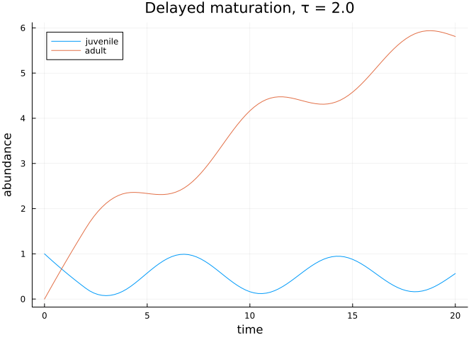
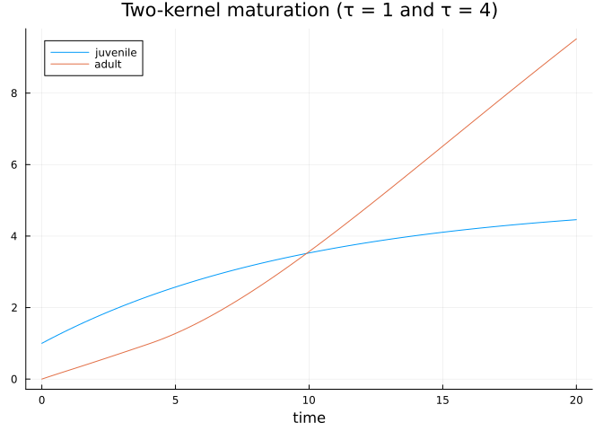

Delay-generator dynamics
Overview
Many population processes incorporate time lags — maturation delays, gestation, cohort effects. FSPD supports delay-generator terms of the form
\[\frac{d\mathbf{n}}{dt} = \mathbf{G}\,\mathbf{n}(t) + \sum_k \mathbf{H}_k\, \mathbf{n}(t - \tau_k) + \mathbf{s}(t),\]
lowered to SciML DDEProblems via to_dde_problem and solved with DelayDiffEq.MethodOfSteps.
Setup
using FiniteStatePopulationDynamics
using StructuredPopulationCore
using OrdinaryDiffEq
using DelayDiffEq
using PlotsA delayed maturation model
Consider a two-stage juvenile–adult model in which juveniles mature only after a fixed developmental delay $\tau$:
domain = DiscreteDomain([:juvenile, :adult])
mu_J = 0.1 # juvenile mortality
mu_A = 0.05 # adult mortality
tau = 2.0 # maturation delay
# Instantaneous terms: only mortality
G = [-mu_J 0.0;
0.0 -mu_A]
# Delayed maturation: the juveniles that survived τ units ago
# become adults now.
H = [-exp(-mu_J*tau) 0.0;
exp(-mu_J*tau) 0.0]
delay_term = DelayGeneratorTerm(tau, H)
delay_term isa DelayGeneratorTermtrueA constant source replenishes juveniles; the history function gives the pre-start state:
history(p, t) = [1.0, 0.0]
prob = DelayFiniteStateProblem(
G, [delay_term], domain,
[1.0, 0.0], history, (0.0, 20.0);
source = [0.5, 0.0],
)
prob isa AbstractFiniteStateDynamicsProblemtrueLowering and solving
Lower to a SciML DDEProblem:
ddeprob = to_dde_problem(prob)
sol = solve(ddeprob, MethodOfSteps(Tsit5()); saveat = 0.2)
plot(sol.t, hcat(sol.u...)'; labels = ["juvenile" "adult"],
xlabel = "time", ylabel = "abundance",
title = "Delayed maturation, τ = $tau")
The solve wrapper dispatches directly on the delay problem too:
sol_direct = solve(prob, MethodOfSteps(Tsit5()); saveat = 20.0)
sol_direct.u[end]2-element Vector{Float64}:
0.5639834026195565
5.8095911171326255Multiple delay kernels
A problem can carry an arbitrary list of DelayGeneratorTerms with different lags:
short_term = DelayGeneratorTerm(1.0, [0.0 0.0; 0.05 0.0]) # fast trickle
long_term = DelayGeneratorTerm(4.0, [0.0 0.0; 0.20 0.0]) # bulk maturation
prob_multi = DelayFiniteStateProblem(
G, [short_term, long_term], domain,
[1.0, 0.0], history, (0.0, 20.0);
source = [0.5, 0.0],
)
sol_multi = solve(to_dde_problem(prob_multi), MethodOfSteps(Tsit5()); saveat = 0.2)
plot(sol_multi.t, hcat(sol_multi.u...)'; labels = ["juvenile" "adult"],
xlabel = "time", title = "Two-kernel maturation (τ = 1 and τ = 4)")
remake on delay problems
prob_long = FiniteStatePopulationDynamics.remake(prob; tspan = (0.0, 40.0))
prob_long.tspan(0.0, 40.0)Summary
DelayGeneratorTerm(τ, H)stores one delay kernel with lagτand generator matrixH.DelayFiniteStateProblemholds the instantaneous generator, a vector of delay terms, the domain, history function, and tspan.to_dde_problemlowers to SciML;MethodOfSteps(·)solves.- This closes the core FSPD API surface; all concrete problem types, structures, and state/time semantic markers are now exercised across vignettes 01–03.